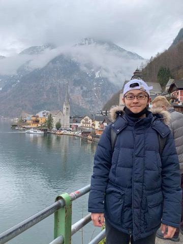

$ whoami
I teach machines to listen to the Earth. Machine Learning Engineer specializing in large-scale time-series modeling and low-SNR signal recovery from distributed sensor networks — prev. X, The Moonshot Factory; Ph.D. in Geophysics. Now making ██████ km of optical fiber listen, at a stealth startup.
// tip: click anywhere — be the earthquake 🌋
I spent my Ph.D. wiring up Yellowstone's hydrothermal systems with seismometers and teaching models to forecast what the Earth does next — work that landed in GRL, GJI and JGR, and got covered by IFLScience and SciTechDaily.
Along the way I found my real obsession: pulling clean signal out of absurdly noisy, multi-terabyte sensor streams. At X, The Moonshot Factory (prev. Google X), I built SIGLIP-style multimodal contrastive models that hit ~99% precision and recall on high-noise sensor retrieval. At Berkeley Lab, I trained Swin Transformers to reconstruct missing signals from sparse arrays across 50+ TB of data.
Since August 2026 I've been a Machine Learning Engineer at a stealth startup (full-time, remote from Washington), working on distributed fiber-optic sensing — turning kilometers of fiber into dense arrays of listening sensors, and building the ML that makes sense of what they hear. 🤫
SIGLIP-based model aligning heterogeneous time-series with structured metadata — ~99% precision & recall in high-noise retrieval, plus a self-supervised pipeline that converts raw unusable data into labeled corpora.
Reconstructing missing signals from sparse, irregular sensor arrays. Trained on 50+ TB; ~0.9 correlation with ground truth up to 20 Hz; inference accelerated 30× — from hours to seconds.
Discovered that Doublet Pool's thumping cycle works as a natural thermometer for the hydrothermal system underneath — first-author paper in GRL, covered by international press.
Shazam-inspired spectral peak hashing over 500+ TB of undersea fiber-optic DAS data — real-time cable protection and maritime vessel detection with >90% accuracy on unseen vessels.
End-to-end automated pipeline: AI phase picking, association, 3-D double-difference relocation, magnitudes & focal mechanisms — a catalog 4× larger than the official routine catalog.
Probabilistic ML forecasting of the world's most famous geyser from decade-scale seismic records — joint work with computer science (Dr. Shandian Zhe) at the University of Utah.
The Leading Edge, 44(4), 265–275
Geophysical Journal International, 239(1), 467–477
Geophysical Research Letters, 50(4), e2022GL101175
JGR Solid Earth, 126(5), e2020JB021610
→ full list on Google Scholar
Joined a stealth startup as Machine Learning Engineer — teaching fiber to listen. 🤫
Ph.D. completed! 🎓 Received the department's Outstanding Ph.D. Award. Dissertation: Seismic Monitoring of Yellowstone Hydrothermal Systems.
Started as Earth Scientist AI Resident at X, The Moonshot Factory (prev. Google X).
Awarded the Graduate Research Fellowship — the University of Utah's top-ranked fellowship.
Joined Lumetec as Data Scientist Intern, working on undersea-cable DAS.
Paper published in The Leading Edge; new collaboration with Dr. Shandian Zhe (Utah CS) on Old Faithful forecasting.
Invited article in TEC Newsletter #47.
Invited reviewer for Seismological Research Letters.
First-author paper accepted in Geophysical Journal International.